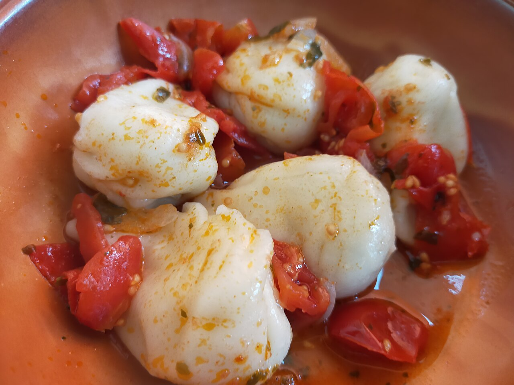
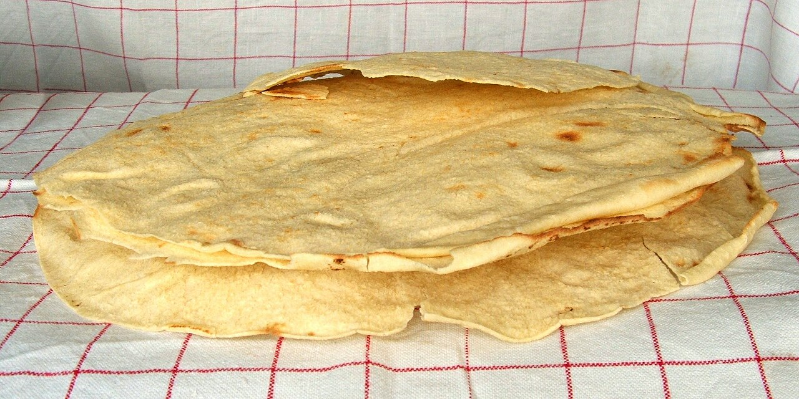
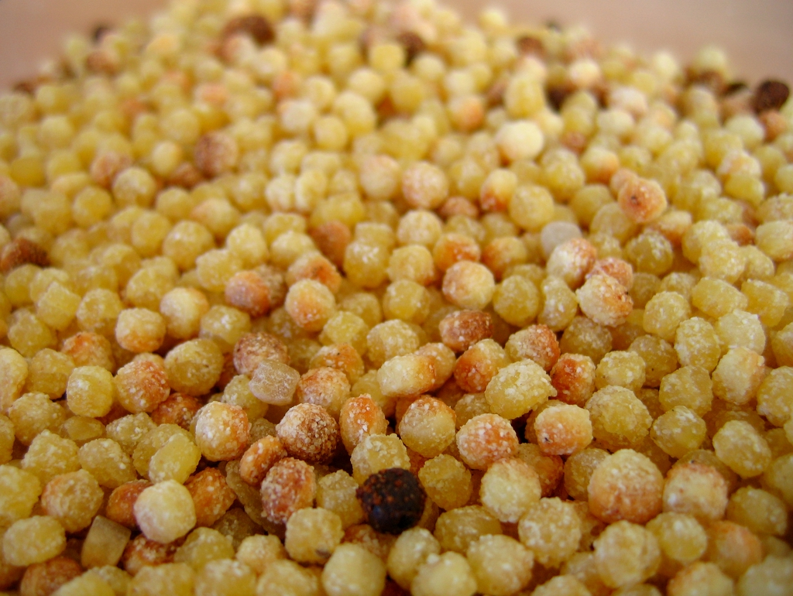

Sardische Küche: Gerichte, Wein & Restaurant-Tipps
Die sardische Küche unterscheidet sich spürbar vom Rest Italiens: geprägt von Hirten- und Fischertraditionen, mit eigenen Nudelformen, eigenem Brot und eigenen Weinen. Ein Überblick über das, was man probiert haben sollte.
Klassiker, die auf keiner Reise fehlen sollten
- Culurgiones – gefüllte Teigtaschen, meist mit Kartoffel-Minze-Pecorino-Füllung, typisch kunstvoll am Rand geschlossen.
- Fregola – kleine, gerundete Nudelperlen, oft mit Muscheln und Safran zubereitet.
- Porceddu – am Spiess gegrilltes Spanferkel, ein Festtagsgericht, das man in traditionellen Landgasthöfen (Agriturismi) probieren kann.
- Pane Carasau – hauchdünnes, knuspriges Fladenbrot, ursprünglich als haltbare Wegzehrung für Hirten gedacht.
- Bottarga – geräucherter, gepresster Fischrogen (meist Meeräsche), fein gerieben über Pasta.
- Seadas – frittierte Teigtaschen mit Pecorino-Füllung, warm serviert mit Honig.

Foto: Marica Massaro, CC BY-SA 4.0
{kind=link}

Foto: Luigi Chiesa, CC BY 3.0
{kind=link}

Foto: Emily Parkhurst, CC BY-SA 2.0
{kind=link}
Käse und Wein
Pecorino Sardo ist der bekannteste Käse der Insel, von mild bis würzig-scharf erhältlich. Bei den Weinen lohnt sich vor allem der Vermentino di Gallura (frischer Weisswein aus dem Nordosten) sowie der kräftige, rote Cannonau – reich an Polyphenolen und oft im Zusammenhang mit der aussergewöhnlichen Langlebigkeit der Bevölkerung in der Bergregion Barbagia genannt, einer der weltweit bekannten "Blue Zones".
Ein Gericht, das auf keiner Speisekarte fehlen sollte: Fregola mit Muscheln – die sardische Antwort auf Couscous.
Wie man gute Restaurants erkennt
- Kurze, wechselnde Speisekarte: Ein Zeichen für frische, saisonale Küche statt Tiefkühlware für Touristen.
- Agriturismi abseits der Küste: Landgasthöfe im Hinterland bieten oft die authentischste und preiswerteste Küche – häufig ohne Kartenzahlung, dafür mit Hausmannskost.
- Volle Lokale mit Einheimischen: Ein einfacher, aber zuverlässiger Indikator abseits der Hauptpromenade.
- Vorsicht bei Speisekarten mit Fotos und vielen Sprachen direkt an der Uferpromenade – meist ein Hinweis auf ein auf Laufkundschaft ausgerichtetes Lokal.
Praktischer Hinweis: In der Hauptsaison (Juli/August) lohnt sich in beliebten Orten eine Tischreservierung am Vortag – ausserhalb der Saison ist das meist nicht nötig.